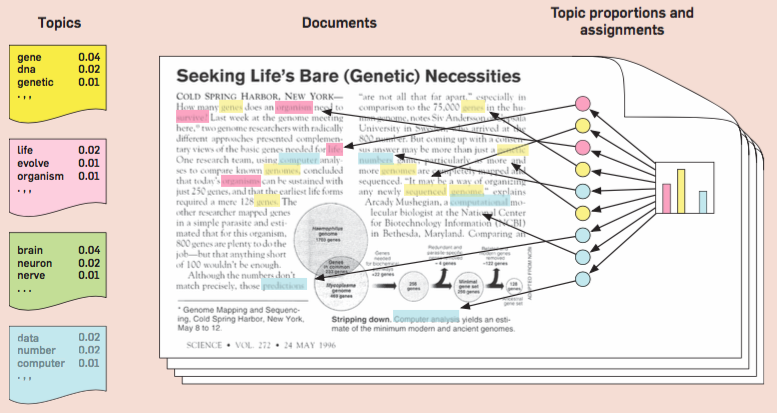

7.4. Latent Dirichlet Allocation Model
The Latent Dirichlet Allocation (LDA) model is a widely used method for modeling collections of documents or articles. In this approach, we abstract away from the sequential nature of language. Each document is boiled down to a “bag of words”, disregarding word order. If our vocabulary comprises of V distinct words (i.e., vocabulary size = V), then each document can be represented as a vector of length V, with each entry denoting the frequency of a corresponding word in that document. Thus, a collection of n documents can be represented by a V-by-n matrix.
However, representing documents by their word frequency in downstream analysis is not only high-dimensional but also often unnecessary. This is where LDA comes in: it offers a more compact representation of a document collection by introducing the concept of ‘topics.’ Each topic is essentially a distribution over words, represented by a vector of length V with each entry indicating the probability of the corresponding word appearing under this topic.
Topics serve as a useful tool for generating articles. Suppose we choose Topic 1 for an article with 200 words. We generate each word based on the multinomial distribution of length V associated with Topic 1. This process is repeated until all 200 words are generated. Topics can also categorize various documents (e.g., business, technology, sports), especially when considering collections from diverse sources like Google News.
Different topics will have different distributions of words. For example, business-related words are more likely to appear under a business topic, while sports-related words will predominantly appear under a sports topic. It is then logical to model a document collection as a mixture of topics, introducing latent variables \(Z_1, \dots, Z_n\), each taking values from 1 to K. Each Z_i value represents the topic distribution for a corresponding document.
Real-world documents usually aren’t confined to just one topic. or example, an article on the IPO of a tech company might contain both technology and business-related words, reflecting a mixture of topics.
LDA recognizes this complexity and extends beyond a simplistic mixture model. Instead of assuming a document being associated with only one topic, LDA assumes that documents can incorporate a blend of several topics.
In LDA, instead of assigning a single latent variable Z_i for the i-th document, we introduce latent variables for each word. This leads to a V×n matrix of latent variables. This configuration allows different words within the same document to relate to varied topics.
Diverging from the simple mixture model where all documents have a shared set of mixing weights for the K topics, LDA grants each document its own set of mixing weights across K topics.
{kind=link}
On applying LDA to a document collection, the output includes:
A topic matrix of size V-by-K; each column srpresents a distribution over words for a specific topic.
A mixing weight matrix of size K-by-n; each column reprsents the mixing weights across K topics for a particular document.
This framework provides a compact representation of the document collection. Previously, each document was represented by a V-by-n term frequency table; with LDA, the representation is compacted to a k-by-n matrix. Each document is now associated with a k-dimensional feature vector, streamlining any downstream analysis.
Given the mixed nature of LDA, standard EM algorithms can’t be employed directly. Instead, the model relies on a variant known as the variational EM.
While I haven’t listed references here, the LDA model is well-documented. Below is an image from a review paper authored by one of the original contributors to the LDA model, illustrating an example with four topics. This example showcases how words in a document might be drawn from different topics, summarizing the information in the document through the frequency of these topics. Notably, some documents might not contain words from every topic.
{kind=link}
In summary, LDA offers an elegant, compact representation of documents, allowing us to distill vast amounts of information into topic distributions.